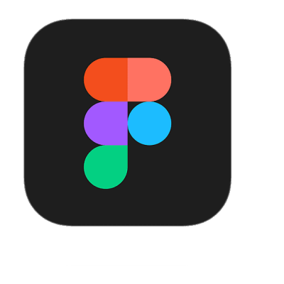

Learnest
Learnestはデザインを投稿し、たくさんの人にフィードバックをもらい自己分析を続けることで「学び」「成長する」ことができるデザイナーのためのプラットフォームです。
担当：企画 / デザイン / コーディング
使用ツール
Notion

Figma

Illustrator

VSCode
2年前期
個人制作
3ヶ月
PROCESS
Problem
Solution
UserVision
デザインの引き出しを増やしスキルが向上する
DESIGN
Concept
Color
SUMMARY
意識した点 ー 意図を正確に伝えるの工夫 ー
デザインのフィードバックを行う際、通常は文章で伝えることが一般的だと思います。
しかし、文字だけでは意図が伝わりにくい場合があるため、視覚的な表現や具体例を交えることで、より分かりやすく伝えられるよう工夫しました。
自由度の高いフィードバックを心がけることで、相手に意図が正確に伝わる方法を意識しました。
ゲーム設定や結果画面での間違いや見逃しを防ぐため、確認手順を追加し、
複雑な操作でもミスなく進められるよう配慮することを意識しました。
反省した点 ー 直感的な理解を促す工夫 ー
ユーザー任せの画面設計や使用フローになってしまい、自由度の高さがかえって混乱を招いてしまいました。
自由度の高い仕様であっても、分かりやすい説明やチュートリアル、
具体的な使用例を提示するなど、ユーザーが「どう使えば良いのか」を直感的に理解できる工夫が必要だったと感じました。
Works


Contact
お問い合わせはこちら
090-7342-1697
kawa.aya1109@gmail.com
Thank you for watching!